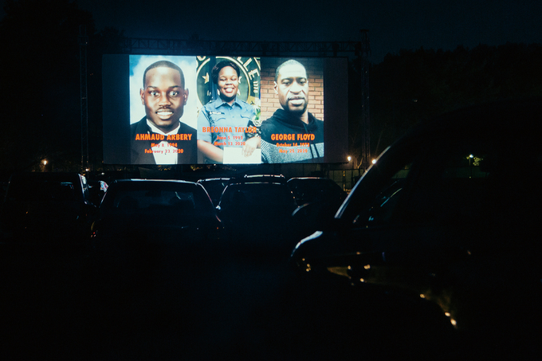

[뉴욕] 흑인 인권 주제로 한 작품들이 대세 이룬 제58회 뉴욕영화제
글 양지현(뉴욕 통신원) 2020-11-03
흑인의 목숨도 소중하다
 뉴욕의 대표적인 이벤트 뉴욕영화제가 지난 9월 17일부터 10월 11일까지 열렸다. 58회를 맞은 올해 영화제에선 지난 수개월 동안 미국은 물론 세계적으로 이슈가 된 ‘흑인의 목숨도 소중하다’ (Black Lives Matter, 이하 BLM) 운동과 관련된 작품이 대거 소개됐다. 코로나19 이후 미국에서 처음 개최된 대규모 영화제인 제58회 뉴욕영화제가 BLM 운동을 전면으로 다룬 것은 BLM이 미국영화계에서도 주요 이슈로 떠올랐다는 것을 의미한다. 뉴욕은 코로나19 사태로 지난 3월부터 10월 현재까지 극장 운영이 중단된 상태이고, 그 때문에 올해 뉴욕영화제는 본래 행사장이던 링컨센터에서 열리지 못하고 버추얼 시네마와 드라이브 인 시어터(자동차극장)로 운영 방식을 변경했다.개막작으로 상영된 스티브 매퀸 감독의 러버스 록은 1970, 80년대 영국 흑인 이민자들의 이야기를 다룬 TV 미니시리즈 스몰 액스중 한 에피소드다. 영국에서는 BBC에서 방영하며, 미국에서는 아마존 프라임을 통해 소개된다. 이 시리즈는 총 5편의 에피소드로 구성돼 있는데, 이번 영화제에서는 러버스 록 외에도 맨그로브 레드, 화이트 앤드 블루 등 3편이 함께 공개됐다. 이외에도 인권운동가 마틴 루서 킹이 암살되기 전까지 수년간 미 연방수사국(FBI)의 수사 대상이 되어 사생활을 감시당했던 이야기를 다룬 샘 폴라드 감독의 다큐멘터리 MLK/FBI, 프랑스 경찰의 지나친 폭력 행사에 대한 다비드 뒤프렌 감독의 더 모노폴리 오브 바이올런스, 웨스트 필라델피아에서 활동 중인 아티스트와 인권운동가들의 생활을 다룬 에브라임 애실리 감독의 인헤리턴스, 소설가 제임스 볼드윈의 파리 방문기를 담은 테렌스 딕슨 감독의 미팅 더 맨: 제임스 볼드윈 인 파리, 윌리엄 클라인 감독의 1974년 다큐멘터리 무하마드 알리, 더 그레이티스트 등도 상영됐다. 동명 브로드웨이 쇼를 각색한 스파이크 리 감독의 아메리칸 유토피아도 소개됐다.
코로나19로 정상적인 극장 상영회는 열리지 못했지만 링컨센터가 위치한 맨해튼 어퍼 웨스트 사이드에 국한돼 한정된 영화 팬들만 참석 가능했던 과거에 비해 좀더 폭넓은 관객층이 참여할 수 있는 기회가 됐다. 자동차극장을 통해 뉴욕시 브루클린과 퀸스, 브롱크스에서도 야외 상영회가 열렸고, 버추얼 시어터를 통해 미 전국의 영화팬들이 스트리밍으로 영화를 볼 수 있었다. 감독과 배우 등 영화 관계자들은 줌을 통한 화상 인터뷰에 다수 참여해 장시간에 걸쳐 작품에 대한 질의응답 시간을 가졌다. 이 인터뷰들은 유튜브 채널 필름 앳 링컨센터에 거의 실시간으로 공개돼 영화 팬들에게 큰 호응을 얻었다.
한국 작품으로는 홍상수 감독의 도망친 여자가 소개됐다. 2002년 생활의 발견으로 처음 뉴욕영화제에 초청된 홍 감독의 영화는 2018년 풀잎들과 강변호텔에 이어 도망친 여자까지 총 15편이 소개됐다. 한편 이번 뉴욕영화제에 출품된 총작품의 수는 지난해에 비해 25% 감소했다.